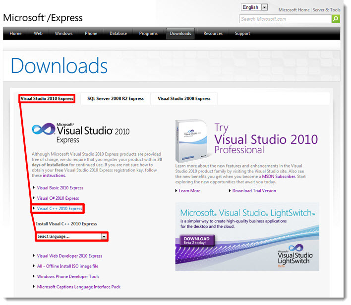
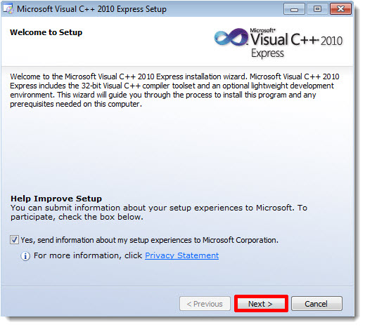
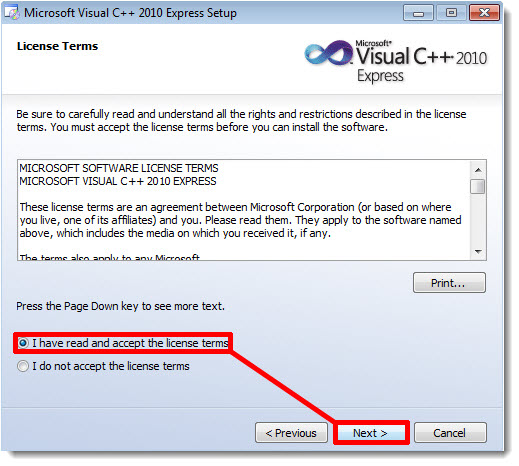
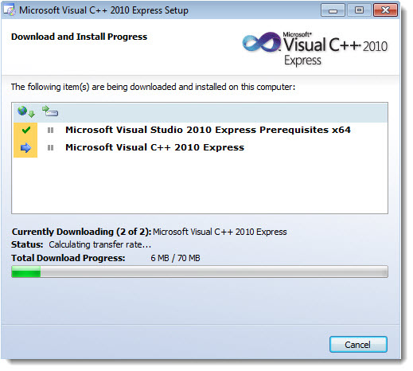

Install Visual Studio C++ 2010 ExpressWe are now going to download and install the free Visual Studio 2010 C++ Express. Currently Torque 3D has a solution for Visual Studio C++ 2008 and 2010. Please point your browser at the following link Visual Studio C++ 2010 Express. The Visual Studio 2010 Express tab should already be active after the page is finished loading
(click to enlarge) 2) Save the file.
3) Locate the downloaded file "vc_web.exe" and run it. Depending upon your account settings, Windows User Account Control may ask for permission. Grant it. After the data has unpacked, then press the Next button. (click to enlarge) 4) Accept the terms and conditions, and then press the Next button. (click to enlarge) 5) Neither Microsoft Silverlight nor Microsoft SQL Server is required for Torque 3D game development. If you do not desire either of them for purposes outside of Torque 3D, then ensure those options are deselected, and press the Next button. (click to enlarge)
6) Select the program destination location or leave the default setting. Please ensure you are connected to the internet as the installer may need to download additional files. When ready, press the Install button. (click to enlarge)
7) The progress window will now be shown. This may take some time to complete.
(click to enlarge) Note: You may need to restart your computer during installation.
8) If all has gone well, you will be presented with the final window. Click the Exit button to complete the installation. Note: There is a 30-day free registration period. Register now using the link in the final window or later from within the program (after you have started it).
(click to enlarge)  |
{kind=link}
{kind=link}
{kind=link}
{kind=link}
{kind=link}
{kind=link}